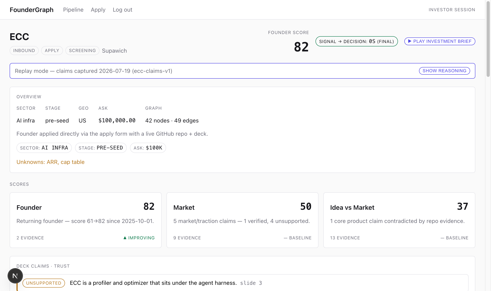

// src/lib/scoring.ts — the founder axis, deterministic
function founderAxis(input: ScoringInput): AxisScore {
const { founderScore, history } = input;
const dated = [...history].sort((a, b) => a.appliedAt.localeCompare(b.appliedAt));
const prior = dated.length > 0 ? dated[0] : null;
let trend: Trend = "baseline";
if (prior && prior.founderScore !== founderScore) {
trend = founderScore > prior.founderScore ? "improving" : "declining";
}
const because = trend === "improving"
? `Returning founder — score ${prior!.founderScore}→${founderScore} …`
: /* declining · baseline */ …;
return { axis: "founder", score: clamp(founderScore), because, trend, … };
}

Chat cites or refuses.
Gaps say “not disclosed” —
never fabricated.
// src/lib/llm.ts — live when a key exists, honest replay when it doesn't
export function hasLiveLlm(): boolean {
const key = process.env.ANTHROPIC_API_KEY;
return typeof key === "string" && key.trim().length > 0;
}
FounderGraph — the VC Brain that deploys $100K checks in 24 hours.